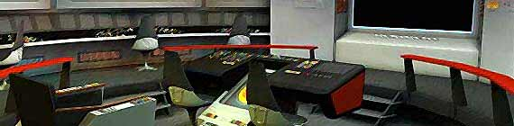
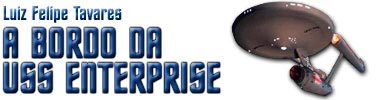
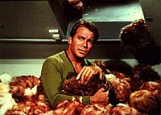
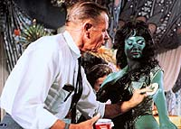
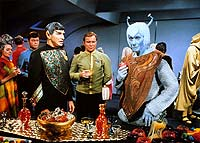

|

 m
8 de setembro de 1966, um novo programa de fico cientfica
estreava na TV americana: Jornada nas Estrelas.
A srie conquistou um pblico fiel, mas no teve vida longa,
perdurando por apenas trs anos, at
1969. Ningum esperava que as reprises nos anos 70 despertariam o gigante
adormecido, tornando o seriado uma marca bilionria. Saiba mais
sobre a histria da Srie Clssica clicando
aqui. m
8 de setembro de 1966, um novo programa de fico cientfica
estreava na TV americana: Jornada nas Estrelas.
A srie conquistou um pblico fiel, mas no teve vida longa,
perdurando por apenas trs anos, at
1969. Ningum esperava que as reprises nos anos 70 despertariam o gigante
adormecido, tornando o seriado uma marca bilionria. Saiba mais
sobre a histria da Srie Clssica clicando
aqui. |


|
 Nosso colunista faz anlises regulares da Srie Clssica, envolvendo produo, bastidores, efeitos especiais, influncias e muito mais. No deixe de conferir seu texto mais recente aqui, e confira tambm o Acervo com todas as colunas anteriores. |
|
 Saiba tudo que h para saber sobre os 79 programas que compuseram a Srie Clssica, com sinopse detalhada, comentrios, curiosidades, citaes e ficha tcnica, clicando aqui. |
 |
Conhea toda a histria da produo das trs temporadas que compuseram a srie original de Jornada nas Estrelas e da luta dos fs para mant-la no ar durante os anos 1960 clicando aqui. |
 |
Todos os detalhes que envolvem o ambiente fictcio da Srie Clssica, incluindo aliengenas, personagens, cronologia e informaes sobre a USS Enterprise e sua misso de cinco anos, esto aqui. |
 |
Encontre aqui material que alia elementos de todos os itens acima, alm de informaes detalhadas dos lanamentos da Srie Clssica ao longo dos anos (no Brasil e no exterior) e as novidades do formato DVD. |
|